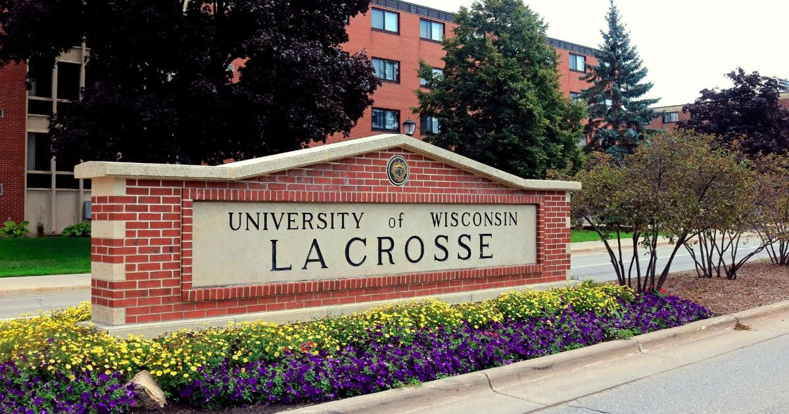

Wisconsin university chancellor fired over ongoing porn career with wife as 'Sexy Happy Couple'The longtime chancellor of the University of Wisconsin-La Crosse has been fired after his porn career with his wife came to light. Joe Gow, who had been chancellor since 2007, was terminated Wednesday by the Universities of Wisconsin System Board of Regents and placed on paid administrative leave “effective immediately,” the system said in a news release. However, as a tenured faculty member, Gow will eventually return to work in a faculty role. He had announced this year that he wanted to move back into teaching as a communications professor. University officials learned that Gow and his wife, former UW-La Crosse professor Carmen Wilson, had been making pornographic videos together and published two books together about making adult films. While the couple used pen names (Geri and Jay Hart) for their two published books on Amazon — "Married with Benefits: Our Real-Life Adult Industry Adventures” and “Monogamy with Benefits: How Porn Enriches Our Relationship” — they weren't very secretive about their adult entertainment endeavors. They used their real photos on social media profiles where they went by the moniker "Sexy Happy Couple." Their social media pages also advertised their videos as available on PornHub and OnlyFans. On their Amazon profile, they described themselves as a married couple "who serve in executive positions at two well-known organizations in the U.S." On Twitter, their bio read: “Passionate plant-powered couple cooking, conversing, and shooting with top adult video stars. Visit our LoyalFans and OnlyFans sites for fully explicit scenes!" They also have a YouTube page under the same name that appears to show cooking videos with adult film stars. Their books were published in 2016 and 2018, and the videos on their YouTube page date to two weeks ago. Gow told NBC News on Thursday that they produced the books and adult films as private citizens — and that none of their public works mentioned the university or his professional career. Gow said his termination is a violation of his First Amendment rights to freedom of speech and expression. “I think it’s very shocking that the Board of Regents would completely disregard my First Amendment rights and my wife’s First Amendment rights and also their own policy on freedom of expression and freedom of speech,” he said. “This is very unexpected.” The discovery of their X-rated online career was met with fury by some in the university. Universities of Wisconsin President Jay Rothman condemned Gow's behavior. “In recent days, we learned of specific conduct by Dr. Gow that has subjected the university to significant reputational harm," Rothman said in a statement. "His actions were abhorrent.” UW System Regents President Karen Walsh said Gow showed a "reckless disregard" for his role. “The outrage over his behavior is evidenced by the unanimous vote by the UW Board of Regents to terminate him as chancellor. We are alarmed, and disgusted, by his actions, which were wholly and undeniably inconsistent with his role as chancellor,” she said in a statement. Gow said that he wasn’t given due process and that he learned of his termination in a letter that referred to "behavioral expectations" for the chancellor. “They did not indicate what policy I had violated. They did not give me a hearing, an opportunity to explain things. I just received a letter that said this is the way this is gonna go, and you’re no longer chancellor,” he said. “We’re just kind of making sense of all this. I’ve had some outreach from people that specialize in free speech issues, and they said they can help if we want to go that route, so we’ll see where we go from here,” Gow said. “Clearly anyone that cares about free speech in society on the university campus should be quite troubled by this.” Rothman said that he filed a complaint asking interim Chancellor Betsy Morgan for a review of Gow's tenure status and that an outside law firm has been "engaged" to investigate the matter. Gow called the request for the review "very, very troubling," saying his actions are protected by tenure. Rothman said in a statement Thursday that chancellors are expected to “put the interests of the universities they lead ahead of their own personal and outside financial interests,” and "unfortunately, Dr. Gow failed to live up to those standards." Speaking on Gow's claims of being denied due process, he said, “As a limited appointee, Dr. Gow served at the pleasure of the Board of Regents and is not entitled to any specific process. That should be abundantly clear to him.” It isn't the first time Gow has gotten into trouble for an interest in X-rated material. He landed in hot water in 2018 after he invited porn actor Nina Hartley to speak on campus as part of a free speech week event. He was reprimanded and denied a raise that year, but he maintained he was embracing free speech by inviting her, the Wisconsin State Journal reported. |
 |